1. Création de la VM sur Proxmox
Paramètres généraux
- Nœud : Sélectionnez votre serveur (ex :
nakserv). - ID / Nom : Attribuez l'ID
100et le nomIT-DOC-Win11C.
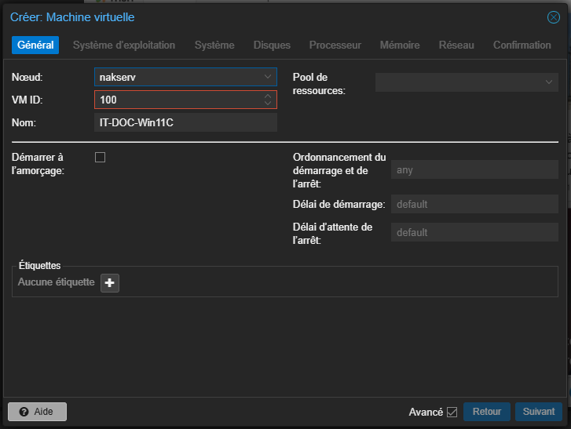
Système d'exploitation
- ISO : Sélectionnez l'image
Win11_25H2_Frenchstockée sur votre serveur. - Type/Version : Choisissez
Microsoft Windowset la version11/2022/2025.
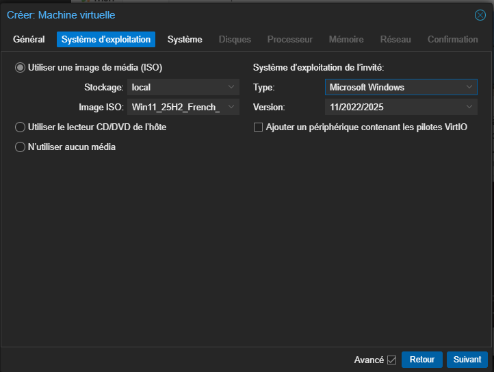
Configuration système (prérequis Windows 11)
- BIOS/Machine : Utilisez
OVMF (UEFI)et le chipsetq35. - Sécurité : Cochez l'ajout d'un disque EFI et d'un module TPM v2.0.
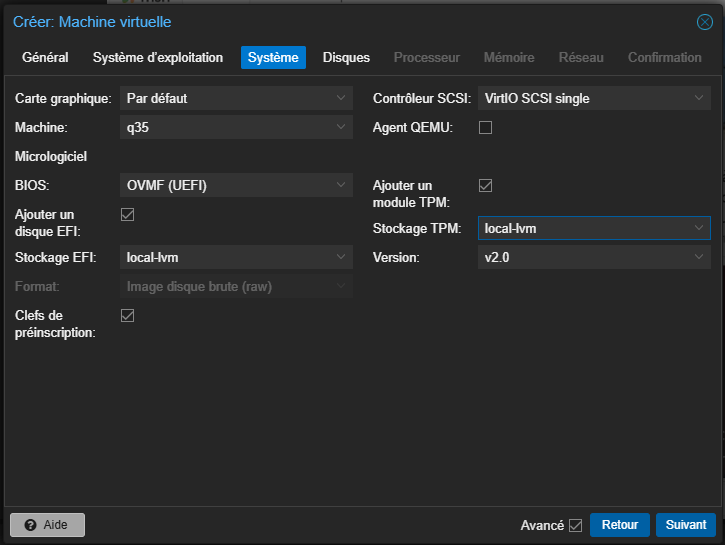
Ressources matérielles
Allouez 60 Go sur le stockage local-lvm.
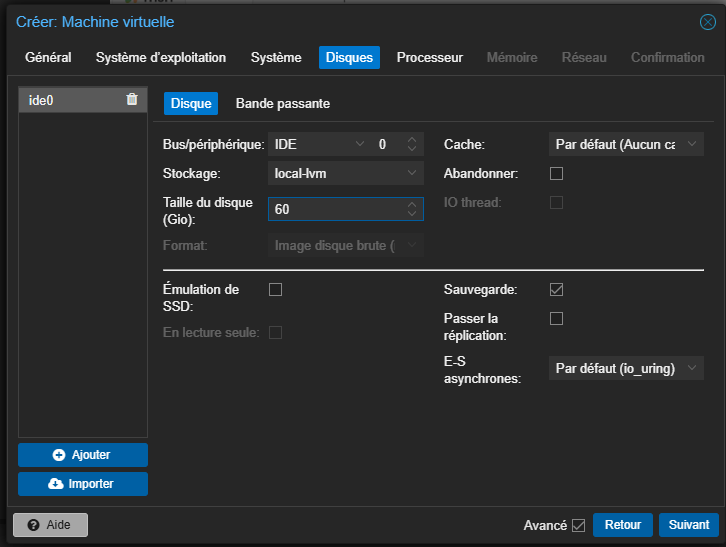
Configurez 2 cœurs CPU.
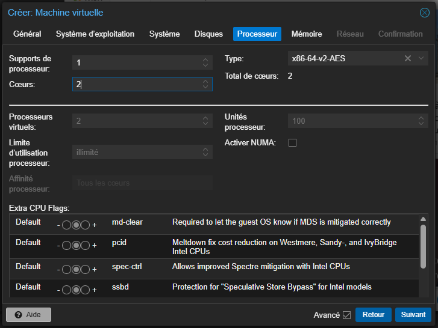
Allouez 4096 MiB (4 Go) de RAM et désactivez le ballooning.
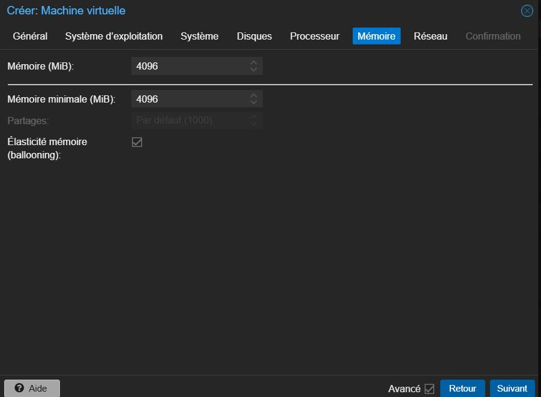
Laissez les paramètres réseau par défaut (Bridge vmbr0).
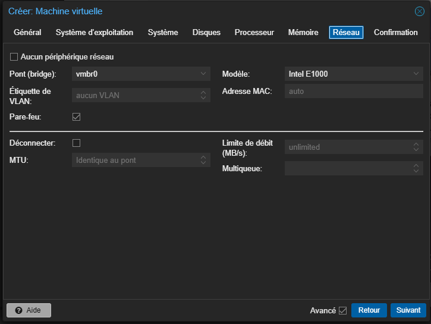
2. Installation du système
Lancez la VM et appuyez sur la barre espace pour démarrer l'installation.
Validez le Français et le clavier AZERTY.
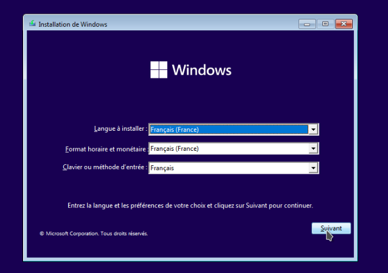
Si vous avez une clé produit renseignez-la, sinon cliquez sur Je n'ai pas de clé produit.
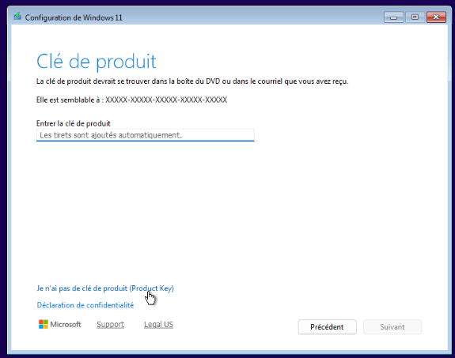
Sélectionnez Windows 11 Professionnel pour plus de fonctionnalités.
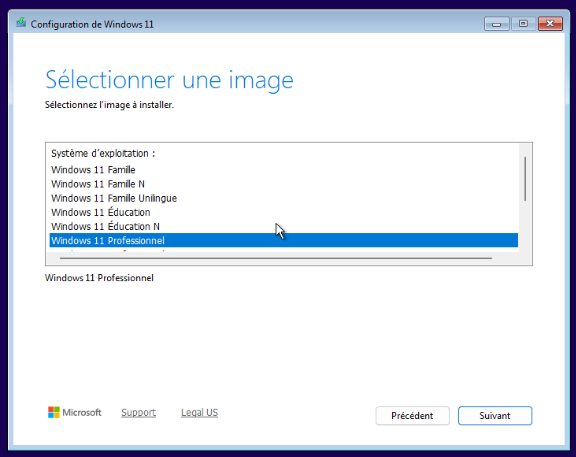
Acceptez les conditions d'utilisation.
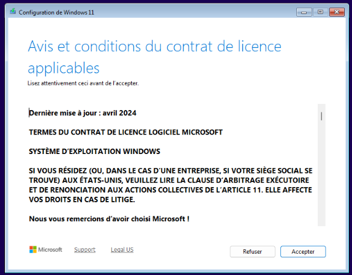
Sélectionnez l'espace non alloué de 60 Go pour le partitionnement.
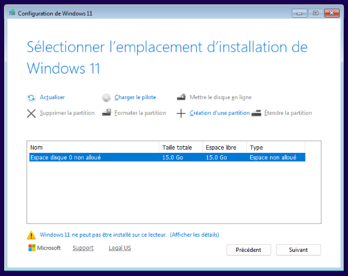
Cliquez sur Installer et attendez la fin de la copie des fichiers.
3. Configuration personnalisée (OOBE & Bypass)
Configuration classique
Sélectionnez votre langue.
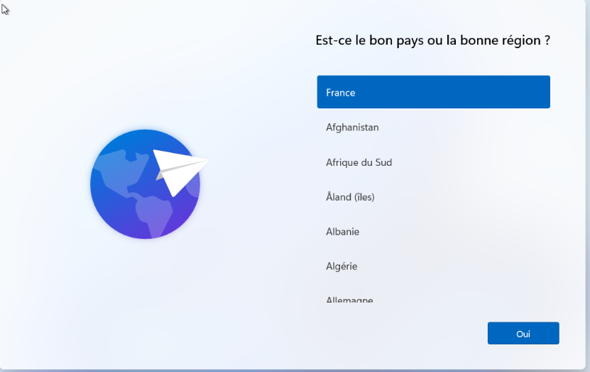
Puis le clavier.
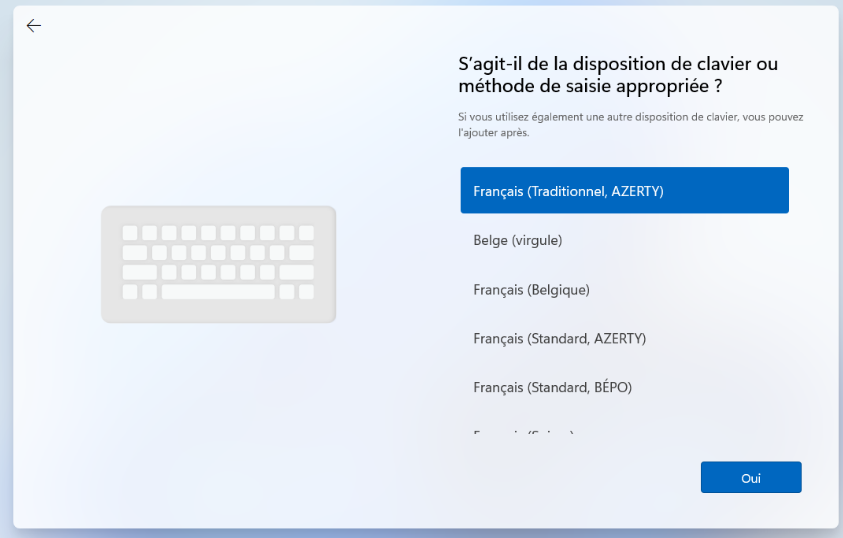
Puis le type d'utilisation.
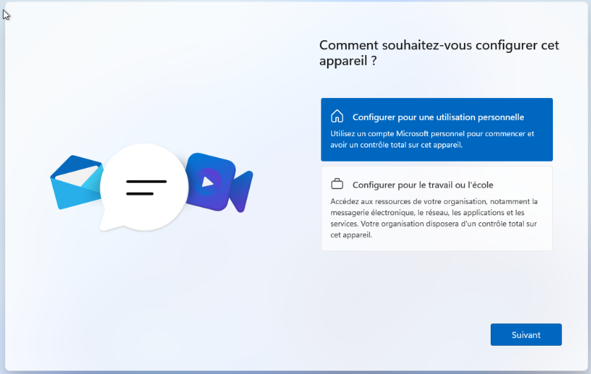
Contournement du compte Microsoft
À l'écran de configuration du pays ou du réseau, ouvrez le terminal avec Shift + F10 (ou Tab + F10) et tapez :
oobe\bypassnro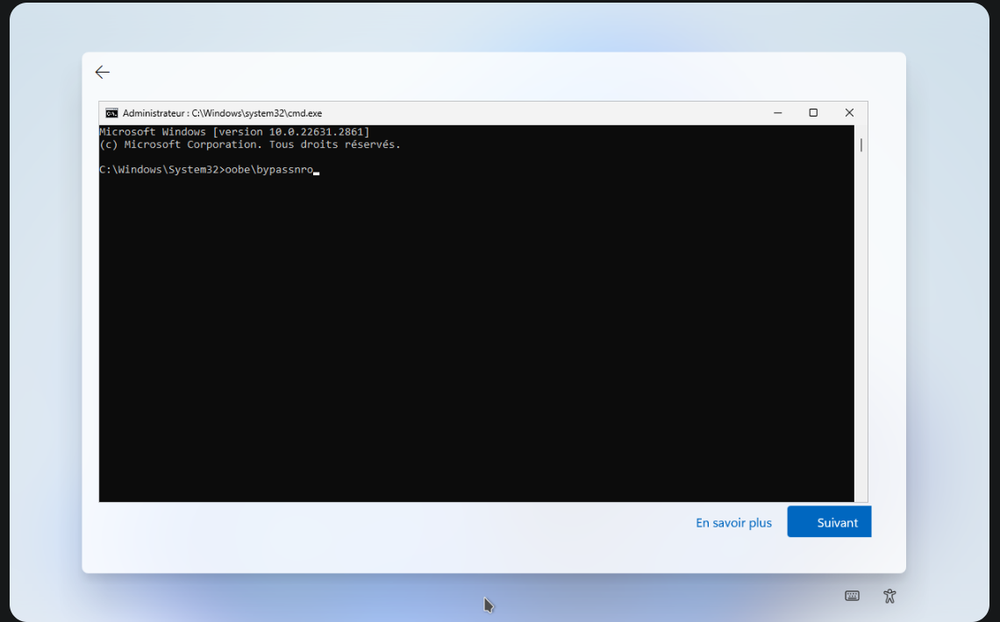
Création du compte local
Windows va redémarrer. Une fois le boot terminé, vous repasserez par le choix de la langue et du clavier, puis vous arriverez sur une page demandant un nom pour l'appareil.
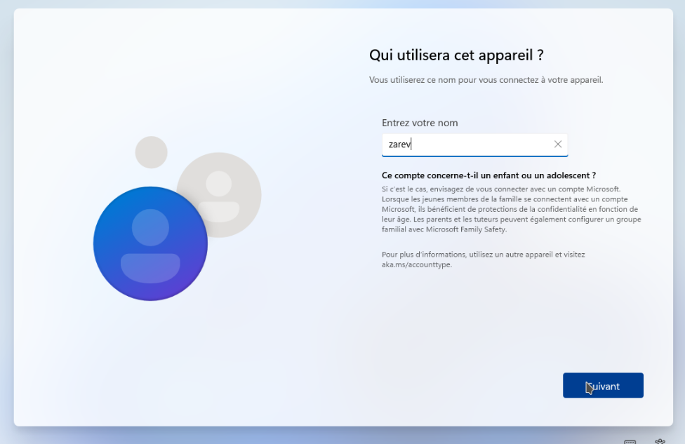
Refusez systématiquement les options de collecte de données pour plus de confidentialité.
4. Finalisation
Patientez durant la préparation finale du bureau.
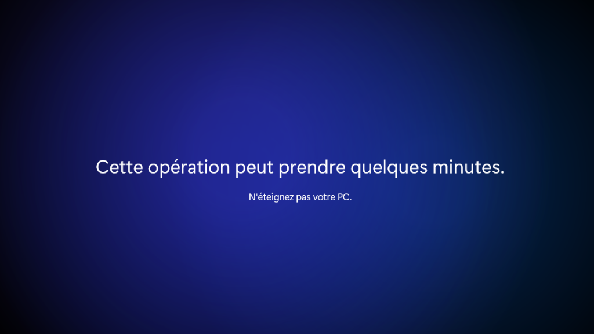
Vous êtes connecté sur votre machine Windows 11.
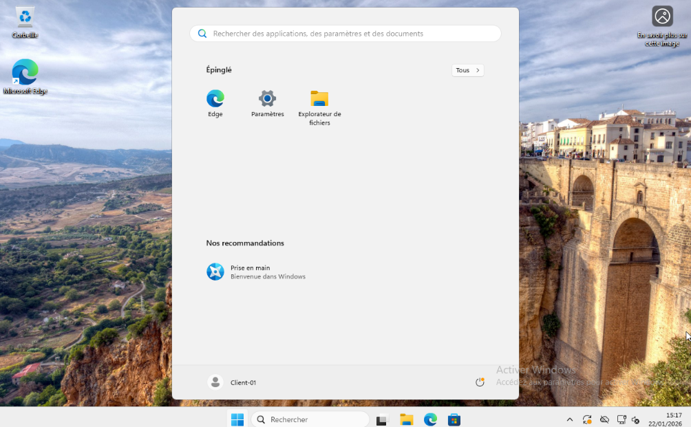